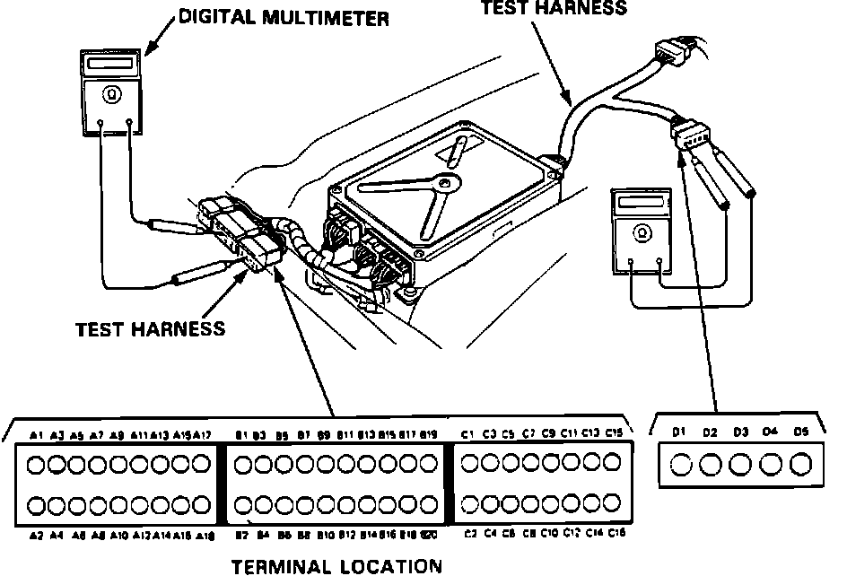

Pinout Values and Diagnostic Parameters
Test Harness Installation:

If the inspection of any particular fault code requires the PGM-FI test harness, remove front passenger seat and connect the test harness and multimeter as shown.

CAUTION:
- Puncturing the insulation on a wire can cause poor or intermittent electrical connections.
- For testing at connectors other than the system checker harness, bring the tester probe into contact with the terminal from the connector side of wire harness connectors in the engine compartment. For female connectors, just touch lightly with the tester probe and do not insert the probe.